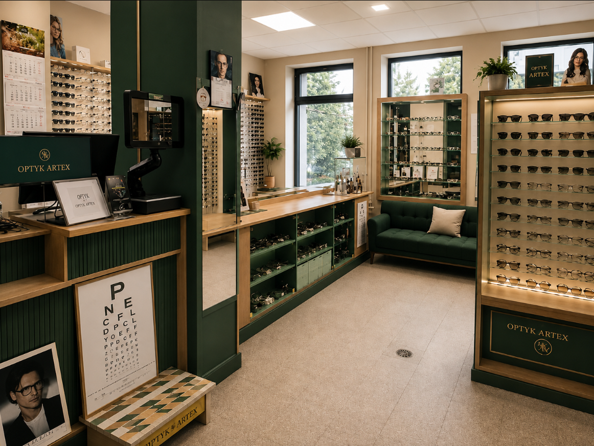
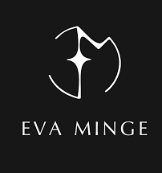
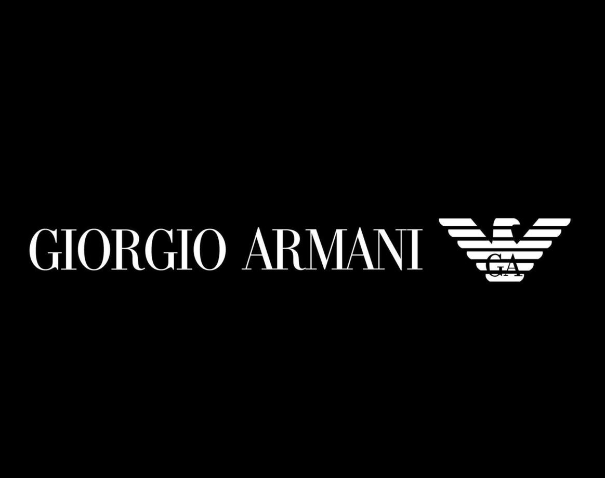
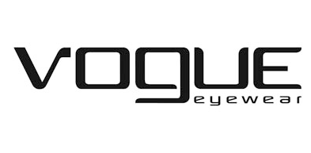

Dla klientów, dla których oprawy to nie tylko korekcja wzroku, ale też element stylizacji — w salonie ARTEX znajdziesz kolekcje znanych marek modowych.

Wybrane marki modowe dostępne w salonie ARTEX — oprawy łączące funkcjonalność z wyrazistym designem.

Kolekcja polskiej projektantki mody — oprawy o wyrazistym, kobiecym charakterze.

Klasyczna elegancja i precyzyjne wzornictwo włoskiego domu mody.

Modne, aktualne fasony dla osób śledzących najnowsze trendy.
„Dobrze dobrane okulary powinny być nie tylko modne, ale też wygodne od rana do wieczora, dostosowane do codziennego stylu życia.”